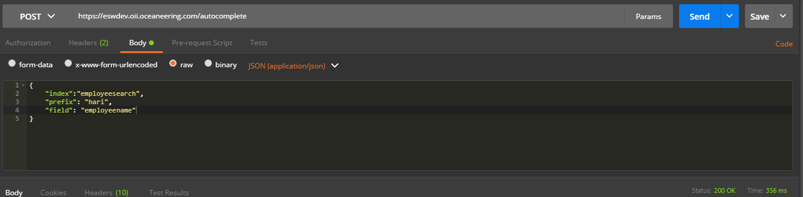
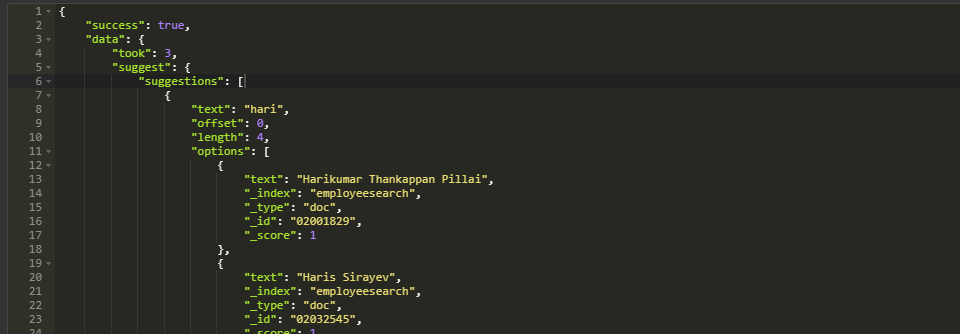
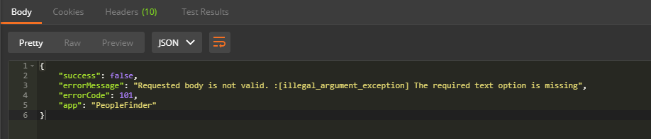

Autocomplete, or word completion, is a feature in which an application predicts the rest of a word a user is
typing. Let’s take a very common example. Whenever you go to Google and
start typing, a drop-down appears
which lists the suggestions. Those suggestions are related to the query
and help the user in completing his
query.
It helps in navigating or guiding a user by prompting them with likely completions and alternatives to the text as they are typing it. It reduces the amount of character a user needs to type before executing any search actions, thereby enhancing the search experience of users.
Elasticsearch is shipped with an in-house solution called Completion Suggester. It uses an in-memory data structure called Finite State Transducer(FST). Elasticsearch stores FST on a per segment basis, which means suggestions scale horizontally as more new nodes are added.
Some of the things to keep in mind when implementing Completion Suggester
To use autocomplete, you need to configure on which filed(s) should autocomplete observe to provide suggestions. For this purpose, a few configurations are written in basic javascript pipeline which denotes the mentioned keys in Array would be used to retrieve suggestions.
Though the list is too big to be displayed as sample, here's a optimized set of configuration fields which are being used in elasticsearch Wrapper for autocomplete suggestions.


A well observed and tested error handling integrated in Wrapper application as every error encountered during
usage of
the API will throw an user understandable error output. The error specifying that required Content-Type was
not passed into the headers during autocomplete API consumption. Required header value to consume this API
will be Content-Type application/json
